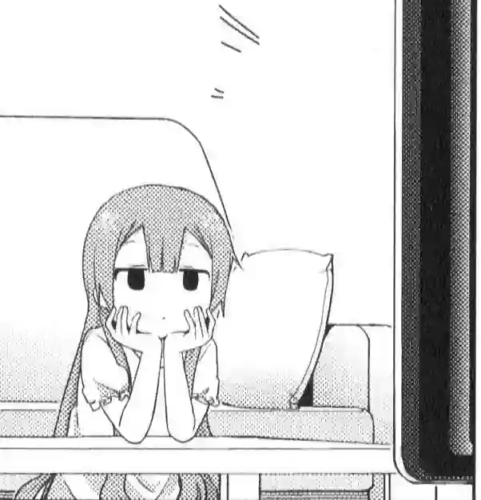

I'm not motivated and don't enjoy learning Japanese, is it still worth my time?
Being unmotivated means that you don't actually want to learn Japanese, but you want to "want to learn Japanese". And if so I highly recommend quitting.
Don't learn Japanese. It's just honestly stupid. Just don't. There's no point to learning Japanese. There's nothing special about it. It's completely meaningless. And that's the honest truth.

Doing Japanese means making a lot of sacrifices. To get good at Japanese you have to permanently change your life in a certain way. You have to spend multiple years reading, watching, listening, looking up words, making flashcards, reviewing flashcards, and so on. If you hate all of that then it's not going to be worth it for you. Being fluent in Japanese is not going to make you happy if the process didn't. And even if it did, I don't think the result is worth suffering for several years.
When I was learning Japanese, I never had problems with motivation. I had a concrete goal. I knew that I wanted to understand untranslated anime. Before I started Japanese, I had been watching anime for 7 years, so I simply pegged learning Japanese to an existing habit. I was going to watch anime almost every day anyway, so why not do it in Japanese.
You have to have a strong passion about something in Japan or about Japanese. Otherwise, it's not going to work. Instead of learning Japanese enjoy Japanese because it's there. Read this book, watch this movie, read this manga, listen to this song. Play the short games.
AJATT is a method that involves living your life fully immersed in the target language, much like being born and raised in the country where the language is spoken. And if you look at the process this way, motivation is out of the equation. Japanese people are never off the AJATT grind. Japanese people are never bored with Japanese. They simply live their daily lives in the language. So, what do you typically do each day? Try doing it in Japanese. Do you enjoy watching anime? Watch it in Japanese. Are you interested in cooking? Learn new recipes in Japanese. Stay up-to-date with current events by reading news in Japanese. By incorporating the target language into your daily activities, you will find it increasingly difficult to fall out of the habit.
Now, if you had motivation before, but lost it, that's a slightly different problem. You've probably lost your goal. You need to rediscover it, or find a new one. What do you want to do in Japanese? Have you watched every movie there is to watch? Have you read every book there is to read? There's no magic pill for fixing motivation, but there's lots of fun things to do in the language. Do Japanese because it's fun.
Lastly, think back to when you didn't know anything at all. It's important to appreciate how far you have come, how much you have learned, and how much you already know. You have already made it this far, and you can continue to make more progress.